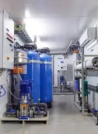
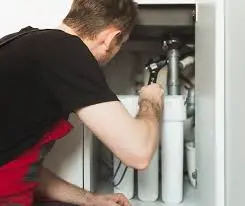

Water Treatment Services San Diego
Having clean water at home is essential for both convenience and health. In San Diego, hard water and other pollutants make water treatment services crucial. EZ Heat and Air offers complete water treatment services tailored to your home's specific needs. Our expertise ensures we handle common water issues effectively. We guarantee you receive pure, high-quality water.
We provide everything from water filtration systems to water softeners. These enhance your home's water supply's flavour and usefulness. Being a respected San Diego water treatment business, we're committed to offering each home excellent options.
Any problem, from contaminants to unequal water pressure, can be successfully resolved by our expertise. For information on San Diego water purification system setup or filtration services, give us a call right now. Enjoy cleaner, healthier water that keeps your family and house safe with Water Treatment Services from EZ Heat and Air.
A Complete Range of Water Treatment Services in San Diego by EZ Heat and Air
Water Filtration Systems
EZ Heat And Air's Water Filtration Systems Remove Impurities Like Bacteria And Chlorine From Your Water Supply. For Optimum Efficiency, We Integrate These Systems Seamlessly Into Your Home's Plumbing. Your Home Can Have Fresh, Clean Water Thanks To Our San Diego Water Filtration System Services.
Water Softeners
Use The Water Softeners From EZ Heat And Air To Combat Hard Water Problems. These Devices Use Cutting-Edge Ion Exchange Technology To Remove Hard Minerals Like Calcium And Magnesium. Softer Water That Safeguards Your Skin, Pipes, And Appliances Is Guaranteed By Our San Diego Water Treatment Services.
Backflow Preventers
EZ Heat And Air Can Install Backflow Preventers To Safeguard Your Water Supply. These Devices Protect Your House From Dangerous Water By Keeping Tainted Water Out Of Your Main Water Supply.
Benefits of Water Treatment Services in San Diego

For homeowners, there are many benefits to investing in San Diego Water Treatment System Installation. By enhancing its general quality, these services guarantee that your water is safe and devoid of dangerous contaminants.
With the right solutions, you may enjoy cleaner water and extend the life of your plumbing. San Diego water filtration systems purge contaminants to produce healthier drinking and bathing water. Water softeners also remove hard minerals, avoiding scale accumulation that harms pipes and appliances.
Installing pressure regulators and backflow preventers improves water safety, saves resources, and lowers utility bills. The comprehensive approaches taken by EZ Heat and Air's water treatment solutions are specifically designed to match the needs of your home.
Purchasing a water treatment system also helps to maintain a sustainable environment. You may reduce plastic trash and your carbon footprint by using less bottled water. These eco-friendly systems support healthy living and support environmental conservation initiatives.

24/7
Service
Same-day Plumbing Service For Any Issue Or Concern Related To Leakage, Clogging, Or Malfunctioning Of Appliances.

FREE
Estimate
Request a quote and get a free estimate for installation, repair, and replacement services from professionals.

FREE
Service Call
From plumbing repairs to full replacements, connect with our experts to inquire about services at zero charges.

15%
Discount Available
15% Off to the Police, Military, Fire Seniors and Teachers for Services up to $1000.

FINANCING
Available
Overcome financial barriers and keep your plumbing system up to date with our alternative financing options.
Don’t Let Plumbing Issues Interrupt Your Comfort & Budget
CALL EXPERTS NOW
 (760) 392 7616
(760) 392 7616
What Our Clients Say About Us
"We needed emergency HVAC services, and they were there in no time. Their services are exceptional, and the team is always friendly and professional. They make sure everything is working perfectly and provide helpful tips to keep our system running smoothly."
Amanda R. - Orange County
"I’ve had my air conditioner maintained by this company for years. They always provide great service, and my system runs efficiently because of their routine checks. Their team is knowledgeable, and I always feel confident in their work. I wouldn’t trust anyone else for my HVAC needs."
Mark T. - San Diego
Why opt for Water Treatment Services San Diego by EZ Heat and Air?
Enjoy cleaner, healthier water that keeps your family and house safe with Water Treatment Services from EZ Heat and Air. Our innovative methods guarantee that your plumbing and appliances don't accumulate scale, increasing their longevity and effectiveness.
We customize each system to meet the unique requirements of your house using precise engineering and dependable servicing. At EZ, we combine state-of-the-art technology with unmatched customer service to deliver water treatment solutions that promote ease and peace of mind.

FAQs
The flavour and safety of San Diego's water are impacted by the high concentrations of minerals and contaminants it frequently carries. Water treatment softens hard water, eliminates impurities, and enhances general quality. You may enjoy better-tasting water, protect your family's health, and preserve your appliances with these services.
A water filtration system purges your water supply of contaminants including bacteria, chlorine, and silt. The systems from EZ Heat and Air work directly with your plumbing to filter water at its source and provide safe, clean water for the entire house.
Water softeners minimise scale accumulation in pipes and appliances by removing hard minerals like calcium and magnesium. The water softeners from EZ Heat and Air safeguard plumbing, lessen skin irritation from hard water and enhance water quality.
A backflow preventer shields your house from dangerous water by preventing tainted water from returning to your main water supply. These devices are carefully installed by EZ Heat and Air to guarantee the safety and cleanliness of your water.
Indeed, water pressure regulators save water wastage and avoid plumbing damage by stabilising water pressure. You can safeguard your home's plumbing system, save water, and reduce utility costs with EZ Heat and Air's installation services.